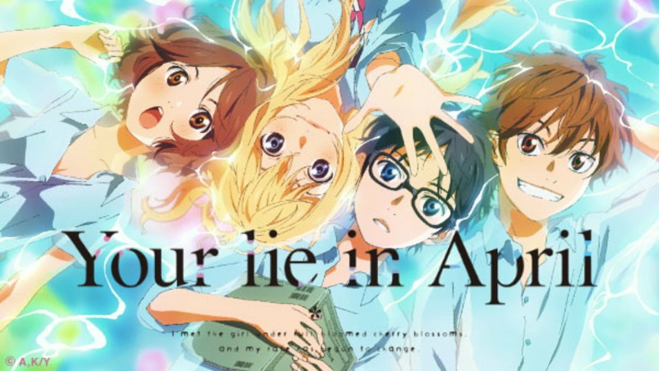

Top 3: 
Shigatsu wa Kimi no Uso (You Lie in April) |
Meet one of the most brilliant and talented pianists—Kousei Arima! Despite being young, he has displayed prodigious talent in music, specifically, playing the piano. But, when his mother died, the sound of his piano sunk into the ocean.
Two years later, Kousei is living a normal school life with his friends but devoid of music. Then it happened—a fateful encounter! Kousei meets a violinist girl named Kaori Miyazono. Is this the start of his re-entry in the world of music? Will he finally be able to bring back
the sound of his piano from the depths of his tragic past? Is Kaori the missing key to his brilliant music? |